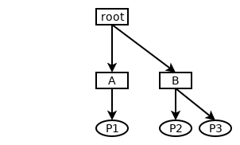
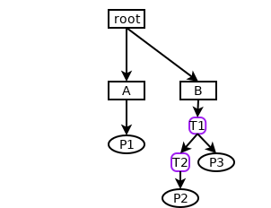
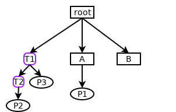

Control-group thread mode
When the control-group interface was reworked, two fundamental design decisions shaped the result in ways that are relevant to the CPU controller. Control groups would no longer be allowed to contain both processes and other groups; instead, control groups would be internal to the group hierarchy and processes would be placed only at the leaves. The new API also differs from the original in that it only allows entire processes to be placed within a group; if a process is multi-threaded, all of its threads must be in the same group. There are solid reasons for these decisions: for many controllers, it is difficult to define rational semantics when processes and groups are competing in the same parent group, and a number of resources (memory usage, for example) are not amenable to control at the thread level.
Some controllers, though, can work well in a more flexible mode; the CPU controller is at the top of that list. It makes sense for processes to compete with control groups for the CPU, and it is often desirable to apply different CPU-usage policies to different threads within the same process. The version-2 API make such configurations impossible, though, to the dismay of users who felt they had lost an important capability. Potential solutions to this problem have been under discussion for some time. A separate "resource groups" mechanism was proposed almost one year ago, for example, but it brought little satisfaction and did not get far.
Control-group maintainer Tejun Heo's latest attempt is called "thread mode". Rather than create a new "resource group" abstraction under application control, it extends the control-group mechanism to provide special groups at the leaves of the hierarchy. Consider, for example, a traditional control-group hierarchy that looks like this:

There are two control groups ("A" and "B") below the root group. The process P1 is contained within A, while P2 and P3 are inside B. This hierarchy follows the rules, since all processes are found at the leaves.
With the new thread mode, the administrator can designate any empty control group as being a "thread point". This group can then be populated with a hierarchy of "thread groups" below it. Thread groups look like regular control groups, but with some significant differences: they can contain both threads and other thread groups, and a single process's threads can be spread across multiple thread groups. A hierarchy using this feature might look like this:

The thread groups ("T1" and "T2") form their own hierarchy below B, which has been marked as a thread point. Note that T1 is able to contain both the thread group T2 and the process P3. In this example, the "processes" P2 and P3 could, in fact, be threads belonging to the same process.
Resource controllers that are not explicitly enabled for thread mode will never see the hierarchy above; instead, the thread groups will, from their point of view, be collapsed out of existence and the hierarchy will look as it did in the first diagram above. Controllers that are able to deal with the thread mode will see the entire hierarchy, though, and will be able to perform resource control at thread granularity.
Scheduler maintainer Peter Zijlstra, who has been an ongoing critic of the control-group changes, was not entirely pleased with this version either. In particular, he disliked the constraint that the thread groups can only appear at the bottom of the hierarchy. The use case he has in mind involves running a threaded workload directly out of the root group, resulting in a hierarchy looking something like this:

The main reason for running the workload in the root group would appear to be performance; there is a small cost to putting processes lower in the hierarchy. Zijlstra would still like to apply full resource control to other groups that might, for example, contain a virtual machine running some sort of secondary workload. Heo's current patch will not support this mode, though, since threaded groups cannot be contained within the same parent group as non-threaded groups.
That restriction exists because to do otherwise would be a violation of the "no internal processes" rule. For non-thread-capable controllers, the thread groups would vanish and the processes contained therein would appear to be contained in the parent — the root group in this case. That would bring back all of the problems that this rule was created to avoid.
There was some strongly worded back-and-forth over whether Zijlstra's use case was something that needed to be (or could be) supported but, in the end, both developers were clearly interested in working out a solution that satisfied the constraints. The form that solution will take is not entirely clear, but Heo outlined one possibility. When a threaded group would share the same parent group as a non-threaded group, the answer is to interpose another group. So, rather than putting T1 directly in the root group as shown above, it would be placed in a new group (call it "C"), and C would be located under the root. That moves the threaded group back out to a leaf, resolving the issues. The intermediate group could be hidden from administrators, but it would need to be there internally.
Zijlstra had actually wanted to make things even more flexible by allowing a threaded group to contain a non-threaded group — essentially doing the thread-point transition in reverse. That would complicate things even further and, in the absence of compelling use cases calling for it, that mode seems unlikely to be implemented.
The real proof will come with a subsequent version of the patch set. There
will, undoubtedly, be further disagreements to be worked out. But it seems
possible that this work might finally be on a path where it can get past
the roadblocks that have kept it out of the mainline until now. That would
be a welcome end to a project that has taken rather longer than anybody
involved would have expected or wanted.
| Index entries for this article | |
|---|---|
| Kernel | Control groups/Thread-level control |